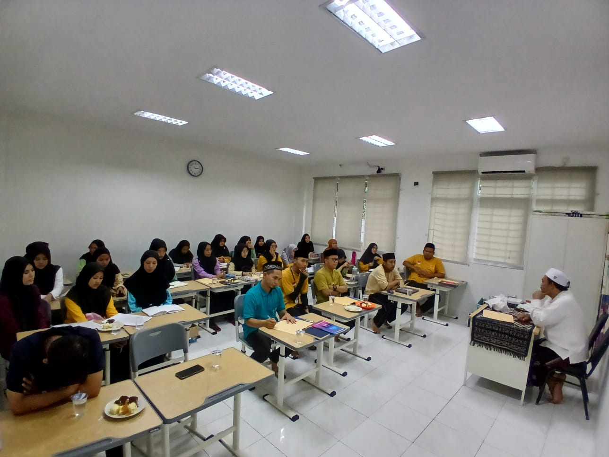

Kajian Kitab Kuning (Kakiku)
Di tengah tuntutan zaman yang semakin dinamis, pendidikan agama menjadi salah satu aspek penting yang harus diperhatikan, terlebih bagi para pendidik yang berperan sebagai teladan bagi generasi muda. Salah satu upaya untuk memperkuat pondasi spiritual para guru adalah dengan mengadakan kajian kitab kuning (KAKIKU), yang bertujuan untuk mendekatkan diri kepada Allah. Program ini dilaksanakan di SDIU Cahaya Al-Fatih, yang dipimpin oleh Direktur Operasional, Agung Rachmatullah Sidiq. Kajian ini memiliki nilai strategis dalam membentuk pribadi guru yang tidak hanya cerdas dalam pengajaran tetapi juga kuat dalam keimanan.
Apa Itu Kitab Kuning dan KAKIKU?
Kitab kuning merujuk pada kitab-kitab klasik yang berisi ajaran Islam, terutama karya-karya para ulama besar dari berbagai madzhab. Kitab-kitab ini sering kali ditulis dalam bahasa Arab klasik dengan tulisan tangan, dan menjadi rujukan utama dalam dunia pesantren di Indonesia. Isi dari kitab kuning biasanya mencakup berbagai ilmu agama, seperti fiqih, tasawuf, tafsir, dan hadits.
KAKIKU (Kajian Kitab Kuning) adalah sebuah program yang dirancang untuk meningkatkan kualitas spiritual dan intelektual para guru di SDIU Cahaya Al-Fatih. Melalui kajian ini, para guru diajak untuk memperdalam pemahaman agama dan memperkuat hubungan mereka dengan Allah. Program ini tidak hanya tentang belajar teori, tetapi juga menerapkan ajaran-ajaran tersebut dalam kehidupan sehari-hari.
Tujuan dan Manfaat Program KAKIKU
Program KAKIKU bertujuan untuk mendekatkan diri kepada Allah, memperdalam ilmu agama, serta meningkatkan keimanan dan ketakwaan para guru. Beberapa manfaat yang dapat diperoleh dari kajian kitab kuning ini antara lain:
- Penguatan Keimanan: Kajian kitab kuning membantu guru untuk memahami lebih dalam tentang ajaran Islam yang akan memperkuat akidah dan menguatkan hubungan dengan Allah.
- Peningkatan Spiritual: Selain ilmu pengetahuan, para guru juga diberikan pemahaman mengenai tasawuf dan adab dalam beribadah, yang berfungsi untuk membersihkan hati dan memperbaiki kualitas spiritual.
- Pemahaman yang Mendalam Tentang Ajaran Islam: Dengan mempelajari kitab kuning, guru tidak hanya memperoleh pengetahuan agama yang lebih luas, tetapi juga dapat mengajarkannya dengan lebih baik kepada siswa, sehingga menciptakan lingkungan belajar yang Islami.
- Menjadi Teladan bagi Siswa: Guru yang mengamalkan ilmu yang diperoleh dari kajian kitab kuning akan menjadi teladan yang baik bagi para siswa. Mereka tidak hanya mengajarkan pelajaran umum, tetapi juga menanamkan nilai-nilai moral dan agama yang dapat mempengaruhi karakter siswa.
Implementasi Program KAKIKU di SDIU Cahaya Al-Fatih
Dalam pelaksanaannya, program KAKIKU ini dirancang untuk mengakomodasi kebutuhan para guru dalam memahami ajaran agama secara komprehensif. Beberapa kegiatan yang dilakukan dalam program ini meliputi:
- Pembacaan dan Pemahaman Kitab Kuning: Setiap pertemuan kajian, para guru akan membaca dan mempelajari kitab-kitab kuning yang berisi tentang fiqih, tafsir, hadits, dan tasawuf. Pembahasan ini dipimpin oleh seorang ustadz atau ulama yang berkompeten di bidangnya.
- Diskusi dan Refleksi: Setelah mempelajari kitab kuning, para guru diajak untuk berdiskusi mengenai makna dan relevansi ajaran-ajaran tersebut dalam kehidupan sehari-hari. Diskusi ini bertujuan agar para guru bisa menerapkan ilmu yang didapatkan dalam praktik pendidikan.
- Praktik Ibadah dan Adab: Sebagai bagian dari pembelajaran, guru juga diajarkan tentang bagaimana meningkatkan kualitas ibadah mereka serta memperbaiki adab dan akhlak. Ini mencakup doa-doa yang dapat diamalkan sehari-hari dan tata cara beribadah yang benar.
- Mendekatkan Diri kepada Allah: Program ini juga mencakup kegiatan dzikir bersama dan muhasabah (introspeksi diri) yang membantu para guru untuk selalu mengingat Allah dalam setiap aktivitas mereka.
Peran Direktur Operasional Agung Rachmatullah Sidiq
Sebagai Direktur Operasional di SDIU Cahaya Al-Fatih, Agung Rachmatullah Sidiq memiliki peran penting dalam mewujudkan program KAKIKU ini. Di bawah kepemimpinannya, program kajian kitab kuning ini tidak hanya menjadi sebuah kegiatan rutin, tetapi juga menjadi bagian integral dalam membentuk karakter guru yang beriman dan bertakwa. Beliau berkomitmen untuk menciptakan lingkungan pendidikan yang tidak hanya mengutamakan kecerdasan akademik tetapi juga kekuatan spiritual.
Agung Rachmatullah Sidiq percaya bahwa guru yang memiliki pemahaman agama yang kuat akan mampu mendidik siswa dengan lebih baik, menciptakan generasi yang tidak hanya cerdas secara intelektual, tetapi juga memiliki karakter yang luhur dan dekat dengan Allah.
Program Kajian Kitab Kuning (KAKIKU) di SDIU Cahaya Al-Fatih merupakan sebuah langkah positif dalam memperkuat spiritualitas para guru. Dengan mendalami ajaran agama melalui kitab kuning, para guru dapat memperdalam keimanan mereka dan memperbaiki kualitas ibadah. Selain itu, program ini juga memberikan dampak positif pada lingkungan sekolah, menciptakan generasi yang tidak hanya unggul dalam ilmu pengetahuan, tetapi juga memiliki karakter yang baik dan dekat dengan Allah. Di bawah kepemimpinan Agung Rachmatullah Sidiq, program ini diharapkan dapat terus berkembang dan memberikan manfaat bagi seluruh civitas akademika di SDIU Cahaya Al-Fatih.
Tinggalkan Jejak
Harap Berkomentar Dengan Bijak
Terimakasih telah berkomentar!